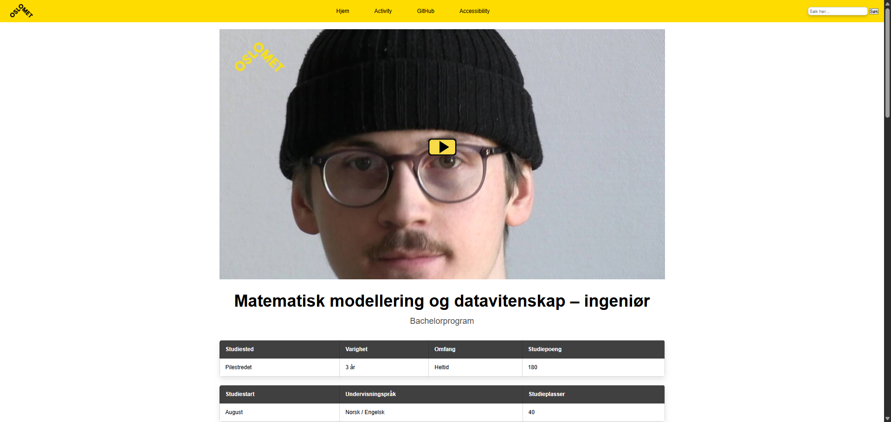

Skoleprosjekt
Rekonstruksjon av OsloMet sin emneside
Koding i HTML, CSS og JavaScript fra scratch.
Student i datateknologi med lidenskap for teknologi og datadrevet innsikt.
Se prosjektene mineKoding i HTML, CSS og JavaScript fra scratch.
Effektiviserte manuelle prossesser gjennom automatisjon ved hjelp av PowerAutomate, med bruk av JavaScript og UI automatisering.
Markedsmateriell for KIWI Pluss og Trumf, utarbeidet i Photoshop.
Studerer for øyeblikket anvendt datateknologi ved OsloMet, og har stor interesse for moderne teknologi og utvikling. Ved siden av studiene jobber jeg som driftskoordinator for NGFLYT hos ASKO Norge – NorgesGruppens automatiske varebestillingssystem for alle deres dagligvarebutikker. I denne rollen håndterer jeg driftsrelaterte oppgaver for å sikre et godt samspill mellom lager, dagligvarebutikkene og profilhusene i NorgesGruppen. Målet er å unngå tomme hyller og unødvendig svinn, og dermed sikre presise og effektive leveranser som gir forbrukerne en god handleopplevelse.
Jeg brenner for å utforske nye teknologier og konsepter, og kombinerer gjerne teknisk innsikt med praktisk problemløsning. På fritiden er jeg spesielt nysgjerrig på kunstig intelligens, automatisering og nye verktøy. Jeg bruker min kunnskap til å utvikle smarte og effektive løsninger som forenkler komplekse og tidkrevende oppgaver – for meg finnes det ingen oppgave som er for stor, det handler bare om tid.